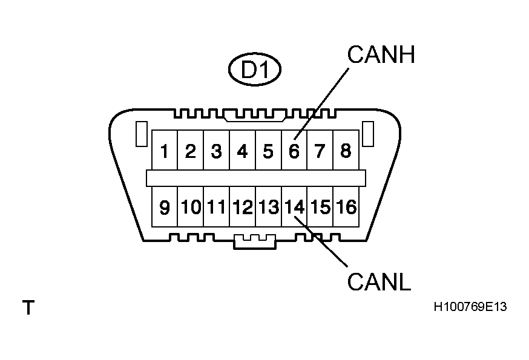
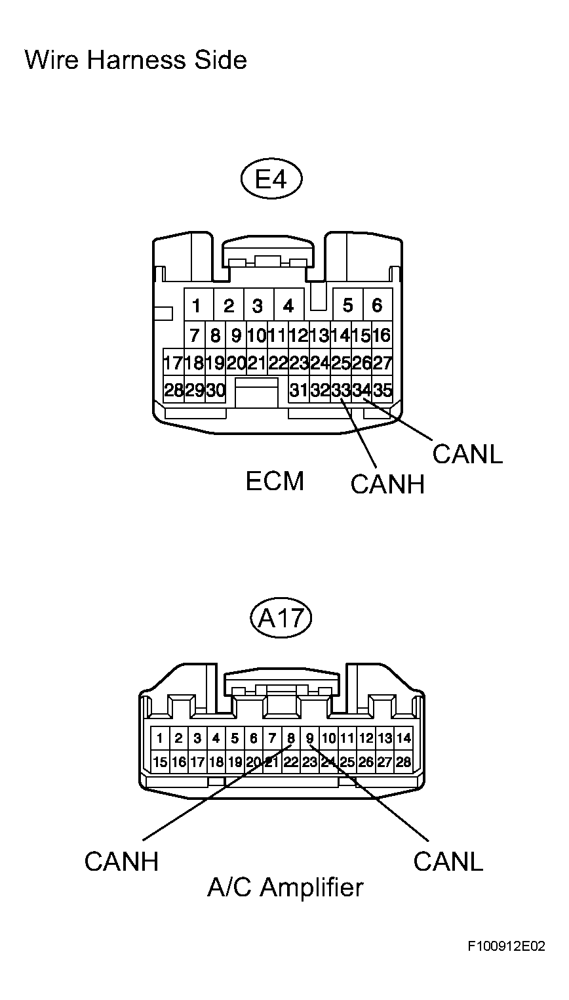
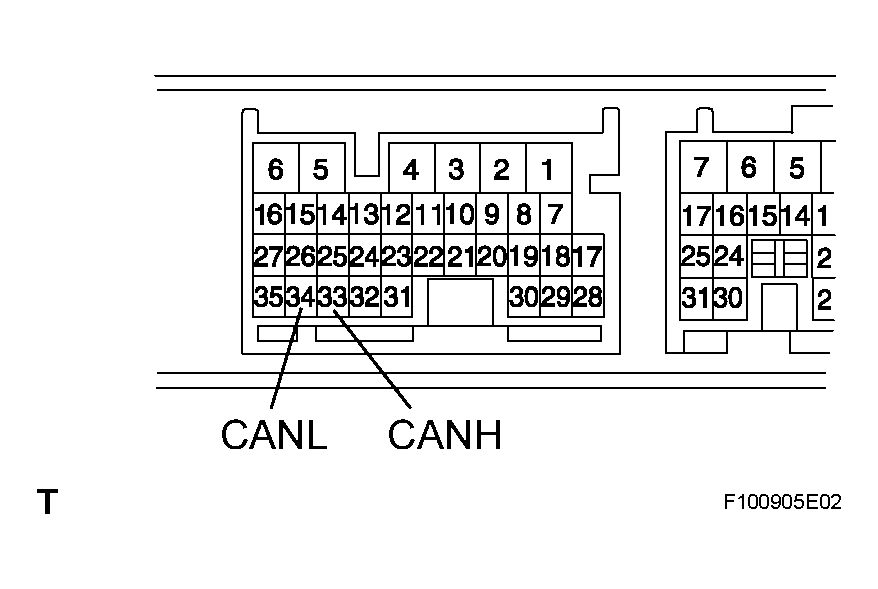

Inspection Procedure
- CHECK DLC3
- Measure the resistance of the DLC3.
Standard resistance
TESTER CONNECTION SPECIFIED CONDITIONTester Connection Condition Specified Condition Proceed to D1-6 (CANH) - D1-14 (CANL) Ignition switch OFF 108 to 132 Ω A D1-6 (CANH) - D1-14 (CANL) Ignition switch OFF 132 Ω or higher B NOTE: When the measured value is 132 Ω or more and a CAN communication system DTC is output, there may be a fault other than the disconnection of the DLC3 sub bus line. After repairing the trouble area, perform the HOW TO PROCEED WITH TROUBLESHOOTING .
B : REPAIR OR REPLACE DLC3 SUB BUS LINE AND CONNECTOR (CANH, CANL)

Courtesy of © TOYOTA, LICENSE AGREEMENT TMS1002A : Go to next step
- Measure the resistance of the DLC3.
- CHECK CAN MAIN BUS LINE FOR DISCONNECTION (ECM - A/C AMPLIFIER)
- Disconnect the E4 ECM and A17 amplifier connectors.
- Measure the resistance of the wire harness side connectors.
Standard resistance
TESTER CONNECTION SPECIFIED CONDITIONTester Connection Condition Specified Condition E4-33 (CANH) - A17-8 (CANH) Ignition switch OFF Below 1 Ω E4-34 (CANL) - A17-9 (CANL) Ignition switch OFF Below 1 Ω
NG : REPAIR OR REPLACE CAN MAIN BUS LINE AND CONNECTOR (ECM - A/C AMPLIFIER) OR JUNCTION CONNECTOR

Courtesy of © TOYOTA, LICENSE AGREEMENT TMS1002OK : Go to Next Step
- INSPECT ECM
- Measure the resistance of the ECM.
Standard resistance
TESTER CONNECTION SPECIFIED CONDITIONTester Connection Condition Specified Condition 33 (CANH) - 34 (CANL) Ignition switch OFF 108 to 132 Ω
NG : REPLACE ECM

Courtesy of © TOYOTA, LICENSE AGREEMENT TMS1002OK : REPLACE A/C AMPLIFIER
- Measure the resistance of the ECM.